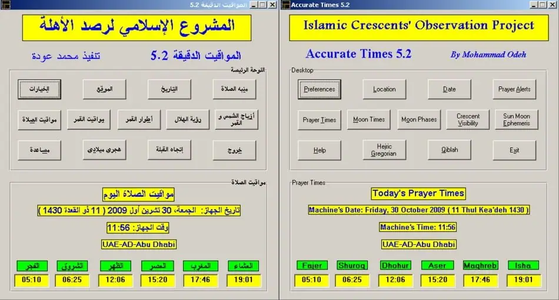

Astronomy knowledge
برنامج المواقيت الدقيقة
This page is available in Arabic only on the AUASS website; it is shown here as published.
1. برنامج المواقيت الدقيقة
المواقيت الدقيقة برنامج حاسوبي لحساب مواقيت الصلاة والعديد من الأحداث الفلكية الأخرى، وهو مستخدم من قبل وزارة الأوقاف والشؤون والمقدسات الإسلامية في الأردن لحساب مواقيت الصلاة، وهو مستخدم أيضا من قبل المجمع الفقهي التابع لرابطة العالم الإسلامي لحساب مواقيت الصلاة في دول أوروبا المختلفة. يشغّل البرنامج بنظام الويندوز، وقد أعدّه م. محمد عودة رئيس المشروع الإسلامي لرصد الأهلة (مارا)، والبرنامج يحسب الأحداث الفلكية التالية:
- مواقيت الصلاة (الفجر والشروق والظهر والعصر والمغرب والعشاء).
- مواقيت الشمس (بداية الشفق ونهايته والشروق والغروب والزوال).
- مواقيت القمر (الشروق والزوال والغروب).
- أطوار القمر السطحية والمركزية (المحاق، التربيع الأول، البدر، التربيع الثاني).
- إمكانية رؤية هلال أول الشهر وهلال آخر الشهر.
- رسم خارطة إمكانية رؤية هلال أول الشهر وهلال آخر الشهر.
- أزياج الشمس والقمر.
- اتجاه القبلة.
- وقت القبلة (الوقت الذي تكون فيه الشمس أو ظل الشمس على اتجاه القبلة).
- التحويل بين التاريخين الهجري والميلادي.
- إطلاق صوت الأذان عندما يحين وقت الصلاة.
- إطلاق صوت للتذكير بقرب وقت الصلاة القادم.
2. اتجاه القبلة
يحسب برنامج “المواقيت الدقيقة” اتجاه القبلة (الوجهة التي تحقق أقصر مسافة إلى مكة المكرمة)، وأيضاً يحسب وقت القبلة أي الوقت الذي تكون فيه الشمس باتجاه القبلة، أو الوقت الذي يكون فيه ظل الشمس متجهاً نحو القبلة. كما يوضح برنامج المواقيت الدقيقة الخريطة العالمية لاتجاهات القبلة، وهي خريطة العالم التي تحتوي اتجاه القبلة لكل العالم كنطاقات ملونة. وفيما يلي نموذج صغير للخريطة العالمية للقبلة.

3. التحويل بين التاريخين الهجريّ والميلاديّ
يمكن استخدام برنامج المواقيت الدقيقة لتحويل التاريخ الهجريّ إلى الميلاديّ وبالعكس. ويرجى ملاحظة أن عملية التحويل هذه تعتمد حسابات فلكية اصطلاحية وليس رؤية الهلال.
4. الخيارات
يحتوي برنامج المواقيت الدقيقة عدة خيارات متاحة وهذه الخيارات غير متوفرة بشكل كامل في أي برنامج آخر. وفيما يلي الخيارات المتاحة في برنامج المواقيت الدقيقة:
- زاويتا الفجر والعشاء: من المتفق عليه بشكل عام أن صلاة الفجر أو صلاة العشاء تحينان عندما يكون مركز قرص الشمس تحت الأفق بمقدار 18 درجة. ولكن بعض الدول أو المنظمات تفضل اعتماد قيم أخرى مثل 16 أو 19 أو 21 درجة…إلخ.
- التوقيت الصيفي: تستخدم العديد من الدول التوقيت الصيفيّ، لذا فإن استخدام هذا الخيار يمكّنك من الحصول على مواقيت الصلاة بشكل صحيح في الصيف.
- الإضافة أو الطرح: تفضل بعض المنظمات إضافة بعض الدقائق أو طرحها من ميقات صلاة معينة مثل الفجر أو الظهر أو المغرب.
- الارتفاع: إن وقتي الشروق والغروب في المناطق المرتفعة عن مستوى سطح البحر يختلفان عما هو الحال بالنسبة للمناطق الواقعة على مستوى سطح البحر. فشروق الشمس في المناطق المرتفعة يكون قبل موعد شروقها بالنسبة لموقع يقع على مستوى سطح البحر، وكذلك فإن موعد الغروب في المناطق المرتفعة يكون بعد موعد الغروب بالنسبة لمستوى سطح البحر. والفرق في موعدي الشروق والغروب بين مستوى سطح البحر وبين منطقة تقع على ارتفاع 1000م يتراوح بين 5 إلى 13 دقيقة (اعتماداً على خط عرض الموقع، والوقت من السنة).
- صلاة العصر: يستطيع المستخدم اختيار الطريقة المفضلة (المذهب الشافعي أو الحنبلي أو المالكي) أو طريقة المذهب الحنفي.
- دقة العرض: يمكن اختيار عرض النتائج إما لأقرب دقيقة أو لأقرب ثانية
- اللغة: يدعم البرنامج اللغتين العربية والإنجليزية، ولكن ملفا “المساعدة” و “النتائج” يظهران بالإنجليزية فقط.
5. مواقيت الصلاة في مناطق خطوط العرض العليا
عندما تختفي علامات مواقيت صلاتي الفجر والعشاء في مناطق خطوط العرض العليا، يتمكّن برنامج المواقيت الدقيقة من حساب المواعيد البديلة. ويتم حساب المواعيد البديلة استناداً إلى الطريقة المعتمدة عام 2009م من قبل رابطة العالم الإسلامي. ولتفعيل هذا الخيار، الرجاء فتح قائمة “الخيارات” وعلّم الخيار “تفعيل الحسابات البديلة لخطوط العرض العليا”
6. منبّه الصلاة
يقدم برنامج المواقيت الدقيقة نوعين من المنبّهات؛ الأول عبارة عن صوت زامور يتكرر عدة مرات قبل مدة يتم تعيينها من قبل المستخدم. وهذا يمكن استخدامه لتذكيرك بإقامة الصلاة قبل موعد الصلاة التالية. أما الثاني فهو سماع صوت الأذان مع حلول وقت الصلاة. ويتاح للمستخدم اختيار سماع أذان مكة أو أذان القدس.
7. الموقع
- الانكسار: بالنسبة لشروق الشمس فإن معظم البرامج تعتمد القيمة المعيارية للانكسار وهي 34 دقيقة قوسية. لكن هذه القيمة متغيرة مع الفصول، اعتماداً على درجة الحرارة والضغط الجويّ، وهذا التغير يمكن أن يغيّر وقت شروق الشمس وغروبها بعشرات الثواني. ولهذا فإنه يفضّل أن يتم إدخال معدّل القيم الحقيقية لدرجة الحرارة والضغط الجويّ للموقع المطلوب. وتفترض الظروف المعيارية أن درجة الحرارة في الموقع المطلوب هي 10 درجات مئوية، وأن الضغط الجويّ فيه يبلغ 1010 مليبار. لكن هذه القيم هي القيم المعيارية عند مستوى سطح البحر. لكن على ارتفاع 1000 م فوق مستوى سطح البحر مثلا سيكون الضغط الجويّ المعياريّ 900 مليبار!
- مواقيت المدينة: يمكن استخدام برنامج المواقيت الدقيقة لإيجاد مواقيت الصلاة لمدينة معيّنة. ولكن سيكون محيّراً أي موقع في المدينة نختار للحسابات؛ الأجزاء الشرقية منها أم الغربية! والخيار المقدم هنا هو حل جيد لهذه المشكلة. افترض مثلاً أنك تريد حساب مواقيت الصلاة لمدينة عمّان والبالغ قطرها 12 كم. ولذلك، قم بإدخال إحداثيات أقصى جزء غربي من عمّان في قائمة “الموقع”. وفي خيار “مواقيت المدينة” الموجود في قائمة “الموقع” أدخل الرقم “12”. والآن عند حساب مواقيت الصلاة لمدينة عمّان، فإن ميقاتي الفجر والشروق سيحسبان للأجزاء الشرقية من المدينة والتي تبعد 12 كم للشرق من الإحداثيات الأصلية. بينما سيتم حساب مواقيت الظهر والعصر والمغرب والعشاء بالنسبة للأجزاء الغربية من عمّان.
8. الخريطة العالمية لرؤية الهلال
يبين برنامج المواقيت الدقيقة إمكانية رؤية الهلال في جميع مناطق العالم برسم منحنيات ملونة على خريطة العالم. حيث يبين كل لون إمكانية معيّنة لرؤية الهلال. وتالياً بعض من الخصائص التي يوفرها برنامج المواقيت الدقيقة:
- يرسم المنحنى لكل من: هلال أول الشهر وهلال آخر الشهر.
- يبين إمكانية رؤية الهلال بناءً على ثلاثة معايير: عودة، ويالوب، ومعيار مرصد جنوب أفريقيا.
- يبين حالة الرؤية المستحيلة. حيث تعتبر الرؤية مستحيلة إذا غرب القمر قبل غروب الشمس، أو إذا حدث الاقتران السطحي بعد غروب الشمس. بالنسبة لهلال آخر الشهر، فإن رؤيته تعتبر مستحيلة إذا أشرق القمر بعد شروق الشمس، أو إذا حدث الاقتران السطحي قبل شروق الشمس.
- يحفظ الخريطة العالمية لرؤية الهلال على شكل صورة بسهولة بالضغط على زرّ.
مدلولات الألوان لكل من هذه المعايير هي حسب ما يلي: أ. معيار عودة:
- الأزرق: رؤية الهلال ممكنة باستخدام المرقب فقط.
- الزهري: رؤية الهلال ممكنة باستخدام المرقب، وقد يرى بالعين المجردة في حالة صفاء الغلاف الجوي التام، والرصد من قبل راصد محترف.
- الأخضر: رؤية الهلال ممكنة بالعين المجردة بسهولة.
ب. معيار يالوب:
- الأزرق: رؤية الهلال ممكنة باستخدام المرقب فقط.
- الزهري: بعد رؤية الهلال باستخدام المرقب قد تمكن رؤيته بالعين المجردة.
- الأصفر: رؤية الهلال ممكنة بالعين المجردة تحت ظروف جوية مثالية.
- الأخضر: رؤية الهلال ممكنة بالعين المجردة بسهولة.
ج. معيار مرصد جنوب إفريقيا SAAO:
- الأزرق: رؤية الهلال بدون مرقب أو منظار غير ممكنة. رؤية الهلال بواسطة أداة بصرية قد تكون ممكنة.
- الأخضر: رؤية الهلال بالعين المجردة ممكنة.
لجميع المعايير:
- الأحمر: استحالة الرؤية: وهذا يكون في حالة غروب القمر قبل غروب الشمس، أو في حالة حدوث الاقتران السطحي بعد غروب الشمس.
- بلا لون: الرؤية غير ممكنة: وهذا يكون في حالة حدوث الاقتران السطحي قبل غروب الشمس، وغروب القمر بعد غروب الشمس، لكن لمعان القمر ليس بالقدر الكافي لتمكن رؤيته حتى باستخدام أداة بصرية.
- أزرق فاتح: رؤية الهلال غير معروفة؛ وهذا يحدث عند خطوط العرض العليا عندما لا يكون هناك غروب للقمر أو شروق له يوم الرصد. في مثل هذه الحالة، فإن تحديد رؤية الهلال يتطلب حسابات أكثر مما هو متوفر حالياً في برنامج المواقيت الدقيقة.
الرجاء الانتباه إلى أن رؤية الهلال في بداية كل نطاق تعتمد وبشدة على الظروف الجوية، وحدّة البصر، وخبرة الراصد، والنظر نحو موقع الهلال مباشرة.
9. أمثلة على خريطة إمكانية رؤية الهلال
خارطة هلال أول الشهر (7 تموز/يوليو 2005)
خارطة هلال آخر الشهر (6 تموز/يوليو 2005)
Migrated from the AUASS website as published, with the formatting tidied and personal emails and phone numbers removed.